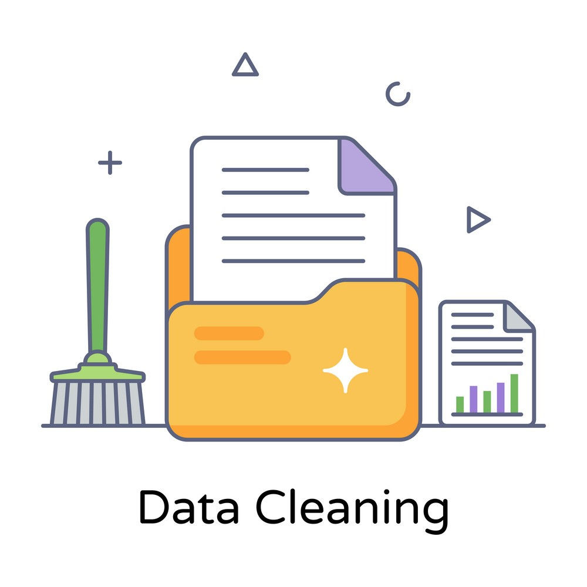
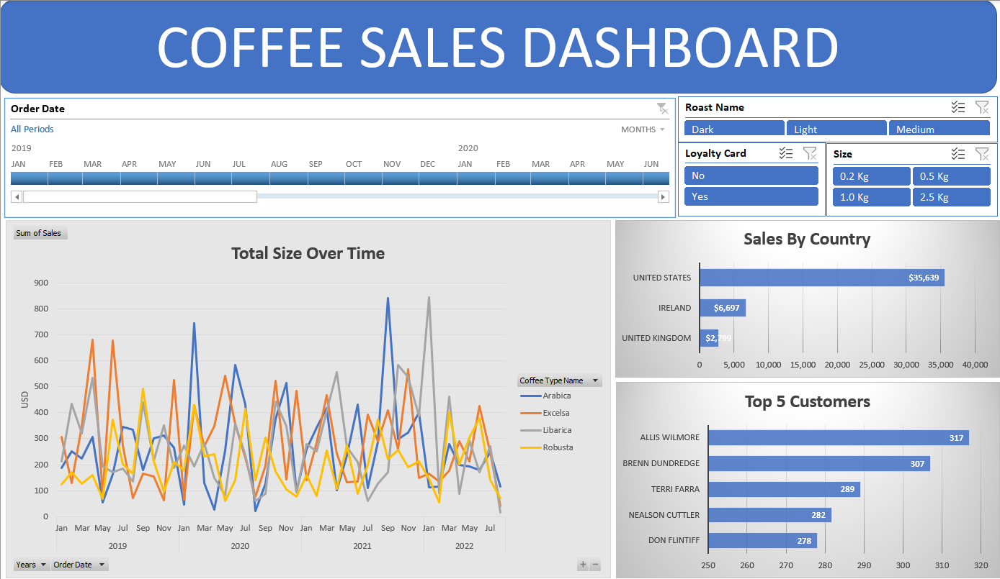
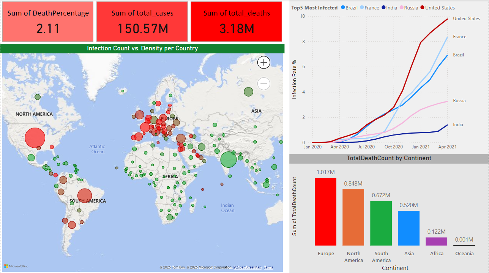

In most Data Projects, cleaning the data is not only the most important part of the project, but also takes the most amount of time and effort! Let's clean this Kaggle dataset to make it usefull for the rest of the Analysis process.

In this one I Explored the massive Covid-19 data set, using SQL, made some simple calculations using CTEs, Views etc. to get some insights.

In this project I cleaned and prepared the data using Lookups and some calculations, used pivot tables and charts, slicers and etc. to build this Dashboard, only using Excel.

Here I went back to the same Covid-19 data I did the SQL Exploration on, and Visualized some of the insights I got from the previous one, and made this Dashboard using Microsoft Power BI.